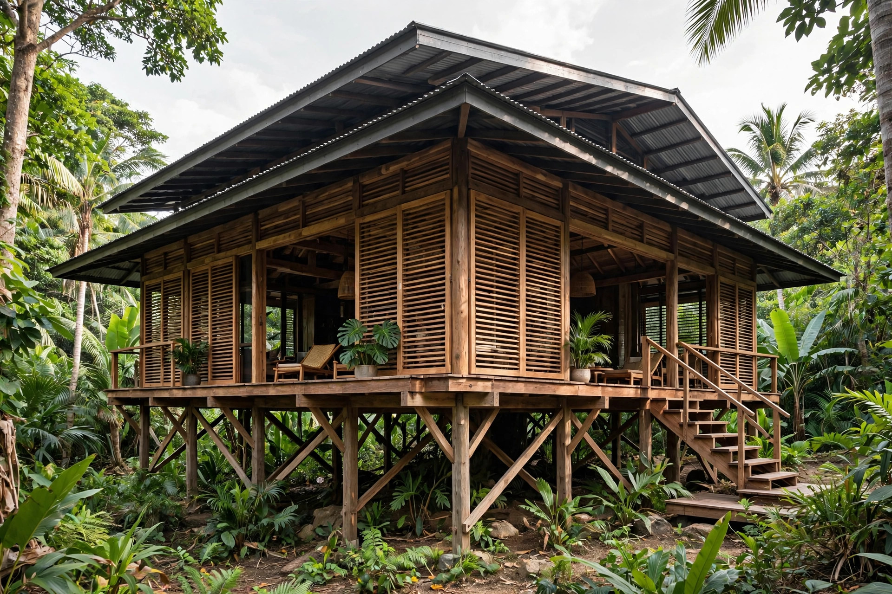

Tropical architecture
Tropical architecture is a field of architecture concerned with designing buildings for hot, humid climates, emphasising passive cooling, ventilation and protection from sun and rain rather than mechanical air conditioning.

1. Principles
2. Vernacular traditions
3. Modernist tropical architecture
4. Contemporary practice
Principles
Core strategies include:
- Orientation and shading: deep roof overhangs, verandas and brise-soleil shield walls from direct sun.
- Ventilation: high ceilings, cross-ventilation, louvres and raised floors exploit the stack effect.
- Thermal mass: lightweight construction avoids storing daytime heat; where mass is used, night ventilation cools it.
- Rain: steep pitched roofs shed tropical downpours; stilts lift living spaces above floodwater.
Vernacular traditions
Vernacular forms — the Malay rumah kampung, the Caribbean shotgun house, the raised Thai house — evolved these solutions over centuries using local materials such as timber, bamboo and thatch.
Modernist tropical architecture
In the mid-20th century, architects such as Maxwell Fry and Jane Drew in West Africa, and Geoffrey Bawa in Sri Lanka, fused modernism with climatic design, producing a distinctive "tropical modernism" of screened facades, courtyards and flowing indoor–outdoor space.
Contemporary practice
With rising energy costs and climate change, passive tropical design has regained prominence in sustainable architecture, informing building codes in Singapore, Brazil and parts of Australia.
See also: Sustainable architecture · Vernacular architecture · Passive solar building design